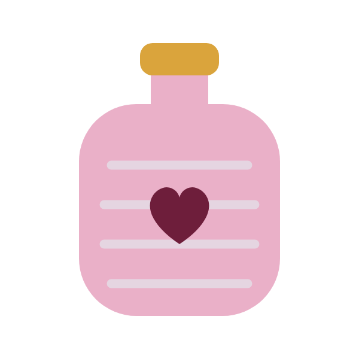
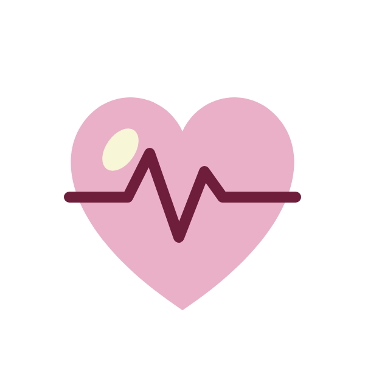
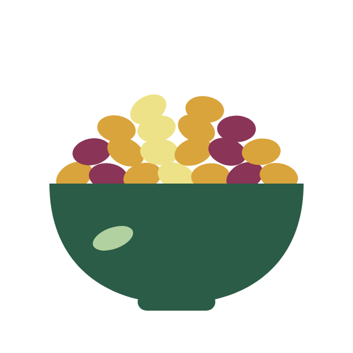
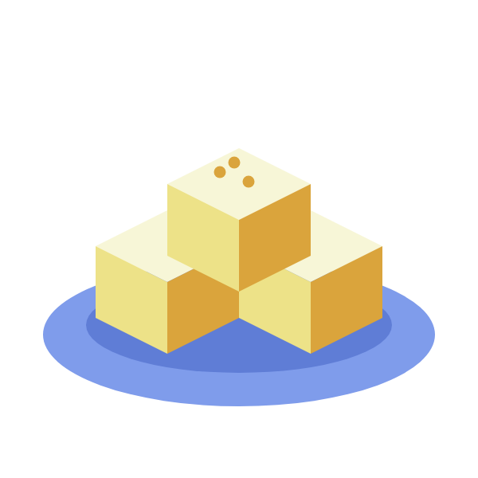
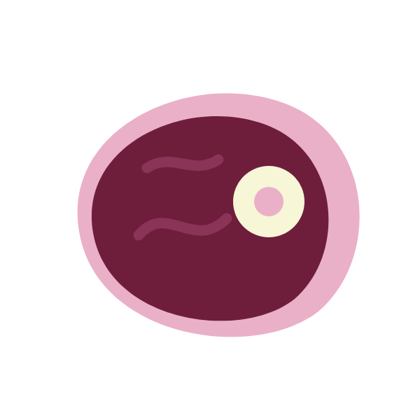
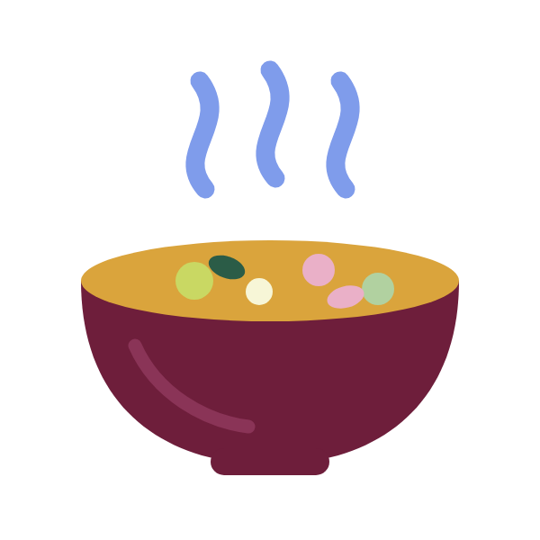
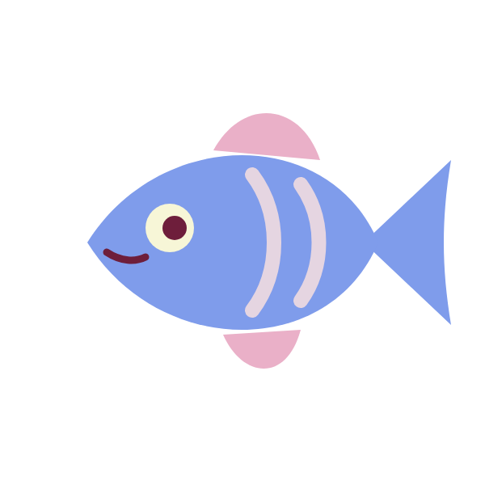
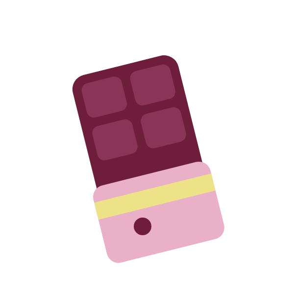

MENSTRUATION
phase
HORMONE STATUS
Estrogen and progesterone are at their lowest. The uterine lining sheds, which can bring cramps and fatigue.

Estrogen
Progesterone

helps develop female sexual characteristics, regulates
the menstrual cycle, and builds up the
lining of the uterus.
prepares and maintains the lining of the uterus for a
possible pregnancy. It also slightly raises body
temperature after ovulation.



ENERGY NEEDED
Low. Favor rest, slow walks, stretching and gentle yoga. Listen to your body and slow down without guilt.



FOOD
Iron-rich foods (lentils, spinach, red meat, tofu) with vitamin C to absorb them.




Warm, comforting meals like soups and stews.

Omega-3s and a little dark chocolate for magnesium. Stay well hydrated.

